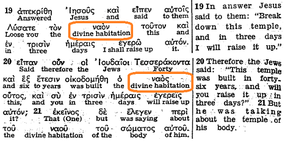
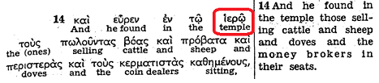

(Apocalipse 7:9) Depois disso eu vi uma grande multidão, que nenhum homem era capaz de contar, de todas as nações, tribos, povos e línguas, em pé diante do trono e diante do Cordeiro, vestidos de compridas vestes brancas, e havia folhas de palmeiras nas suas mãos.
(João 10:16) “E tenho outras ovelhas, que não são desse aprisco; a essas também tenho de trazer, e elas escutarão a minha voz e se tornarão um só rebanho, com um só pastor.
(Apocalipse 7:4) Então ouvi o número dos selados: 144.000, selados de toda tribo dos filhos de Israel.
(Lucas 12:32) “Não tema, pequeno rebanho, porque o seu Pai se agradou de dar o Reino a vocês.
A expressão “Grande Multidão de Outras Ovelhas” não aparece na Bíblia.
A revista A Sentinela vem mostrando as expressões “Grande Multidão” e “Outras Ovelhas” na mesma frase mais de 2500 vezes durante os últimos 50 anos. Esse entendimento da organização vem de uma interpretação por eisegese, visto que os contextos de Apocalipse e dos Evangelhos não fazem essa ligação arbitrária. A frequência com que a Torre de Vigia junta essas expressões dificulta para uma Testemunha de Jeová individual ler esses textos de maneira diferente.
Nenhum texto bíblico afirma que a Grande Multidão ou as Outras Ovelhas estão na Terra. Os cristãos entendem que a Grande Multidão tem esperança celestial. O Pastor Russell também pensava assim. Até Rutherford acreditava na esperança celestial da Grande Multidão, durante muitos anos:
*** Livro O que o Pastor Russell Disse, p. 297, em inglês, tradução minha ***
A Grande Multidão recebe vida diretamente de Deus no plano espiritual? Resposta – Sim, eles recebem vida diretamente do fato de terem sido gerados do Espírito Santo, e quando são gerados, são como o pequeno rebanho, pois somos chamados para a chamada de uma só esperança. Eles não garantem sua chamada e sua eleição, mas se não forem dignos da segunda morte, recebem vida no plano espiritual.
*** A Sentinela, 15 de Janeiro de 1927, p.19-20, em inglês (tradução minha) ***
… todos os fatos e textos sobre o assunto em consideração mostram que os que formam a grande multidão constituem uma classe espiritual, nascida no plano espiritual.
*** Vindicação, Volume 3 (1932), p.204, em inglês, tradução minha ***
… devem ser criaturas espirituais.
Grande Multidão
Apocalipse 7:9,10,15:
9 Depois destas coisas eu vi, e, eis uma grande multidão, que nenhum homem podia contar, de todas as nações, e tribos, e povos, e línguas, em pé diante do trono e diante do Cordeiro, trajados de compridas vestes brancas; e havia palmas nas suas mãos.
10 Clamavam em alta voz: “Devemos a salvação ao nosso Deus, que está sentado no trono, e ao Cordeiro.”
15 É por isso que estão diante do trono de Deus; e prestam-lhe serviço sagrado, dia e noite, no seu templo; e O que está sentado no trono estenderá sobre eles a sua tenda.
Onde está a “grande multidão” de Apocalipse 7:9,15?
As Testemunhas de Jeová acreditam que a grande maioria da humanidade será abençoada com a vida humana eterna na Terra, enquanto que apenas um “pequeno rebanho” de 144.000 irá para o céu para servir com Cristo. Cristo é o mediador apenas dos 144.000 “ungidos”, membros da classe celestial. Os da classe terrestre, portanto, não fazem parte do novo pacto mediado por Cristo e desfrutam de um relacionamento com Deus apenas por virtude de sua associação com os que professam ser os últimos membros restantes dos 144.000 ainda na terra.
Para entender esse ensinamento, é essencial conhecer os significados de duas palavras gregas (“naos” e “hieron”), e como elas se relacionam com o templo de Deus na Bíblia:
- “Hieron” (grego ι’ερο´ν) é a palavra grega para todo o complexo do templo, com todas as suas sub-estruturas e tribunais.
- “Naos” (grego ναο´ς) refere-se ao santuário interior do complexo do templo, que inclui o Santo e o Santíssimo.
Na Tradução Interlinear do Reino das Escrituras Gregas, que é o texto literal do grego:
- “hieron” é sempre traduzido como “temple” (ou templo, em português)
- “naos” é sempre traduzido como “divine habitation” (habitação divina, em português)
Na Tradução do Novo Mundo em português:
- “hieron” é sempre traduzido como “templo”.
- “naos” é quase sempre traduzido como “santuário” ou “santuário do templo”. (Rev. 11: 2,19; 14:15; 15: 5-8; 16: 1,17) As duas únicas exceções são Apocalipse 7:15 e Apocalipse 3:12, onde o termo “naos” é traduzido da mesma forma que “hieron”, ou seja, “templo”.
Vamos considerar 4 evidências que nos ajudam a entender de onde a “grande multidão” serve a Deus:
- Abrangência inicial do termo “naos”
- Abrangência modificada do termo “naos”
- Diante do trono
- Apocalipse 19:1
1) ABRANGÊNCIA INICIAL DO TERMO “NAOS”
Vamos LER JOÃO 2:14,15
14 E ele achou no templo os que vendiam gado, e ovelhas, e pombas, e os corretores de dinheiro nos seus assentos.
15?Assim, depois de fazer um chicote de cordas, expulsou do templo a todos com as ovelhas e o gado, e derramou as moedas dos cambistas e derrubou as suas mesas.
Explicando a abrangência do termo “templo” no texto acima, a Sentinela de 15 de agosto de 1960 em inglês (w60 8/15, disponível apenas em inglês no CD-ROM), na página 493 do volume encadernado, parágrafo 2 do artigo intitulado “O Templo da Época dos Apóstolos”, diz (tradução minha):
“Que tipo de edifício poderia ser esse que tinha espaço para todo esse tráfego? O fato é que esse templo não era apenas um prédio, mas uma série de estruturas da qual o santuário do templo era o centro. Na língua original essa diferença é bem clara: os escritores da Bíblia faziam distinção entre os dois pelo uso das palavras hieron e naos. Hieron refere-se a todo o terreno do templo, enquanto naos aplica-se à estrutura do templo em si, ao sucessor do tabernáculo do ermo. Assim, João diz que Jesus encontrou todo esse tráfego de pessoas e animais no hieron.
Logo, esse artigo identifica corretamente a parte externa da área do templo (onde a Bíblia diz que os cambistas estavam localizados) pela palavra grega “hieron”.
Até então, o entendimento, nas publicações, das palavras “naos” e “hieron” era o seguinte:
- “naos” normalmente representa o céu. Porque? Por tratar-se da parte do templo que somente a classe sacerdotal acessava e por ser a parte sucessora do tabernáculo do ermo.
- “hieron” normalmente representa a Terra, por tratar-se de todo o terreno do templo, onde todo tipo de pessoas tinha acesso, inclusive cambistas, animais, etc.
Agora vem a parte que nos interessa. Onde está a grande multidão? ler Apocalipse 7:15
15 “É por isso que estão diante do trono de Deus; e prestam-lhe serviço sagrado, dia e noite, no seu templo; e O que está sentado no trono estenderá sobre eles a sua tenda.”
De acordo com esse texto, a grande multidão está localizada no “templo”, servindo a Deus dia e noite. Normalmente, a tradução “templo” vem da palavra “hieron”.
A Sentinela w73 1/7 p. 402 par. 22 (disponível no CD-ROM da Watchtower Library) diz:
Esta bela visão apresenta a “grande multidão” internacional como servindo a Jeová no seu templo, quer dizer, nos pátios terrestres reservados aos que não são israelitas espirituais, como se estivessem no “pátio dos gentios”.
Similarmente, A Sentinela w96 1/7 p.20 par.4 diz (disponível no CD-ROM da Watchtower Library):
Conforme predito, os da grande multidão “adoram [a Deus] dia e noite, no seu templo”. Visto que não são israelitas espirituais, sacerdotais, é provável que João os tenha visto em pé, no templo, no pátio externo dos gentios.
Este ensino também é ilustrado por um desenho na Sentinela w81 15/2 p. 17 — Fotos na página 17 (descrição textual da foto disponível no CD-ROM da Watchtower Library). Aqui, o artista mostra explicitamente a “grande multidão” com “palmas” no pátio exterior dos gentios, atrás do soreg (muro de divisão). É um lugar onde felizes adoradores de Deus prestam-lhe serviço sagrado dia e noite.
Poderia-se supor, então, que a palavra grega “hieron” é o que a Tradução do Novo Mundo traduz como “templo” em Apocalipse 7:15 para descrever a localização da grande multidão:
Apocalipse 7:15 É por isso que estão diante do trono de Deus; e prestam-lhe serviço sagrado, dia e noite, no seu templo; e O que está sentado no trono estenderá sobre eles a sua tenda.
Mas, de acordo com a Tradução Interlinear do Reino, o idioma original mostra que a grande multidão está localizada no “naos” [habitação divina]. Parece uma contradição! Mas vamos analisar com calma.
A Sentinela de w81 15/2 p.15 par.4-5 (disponível no CD-ROM da Watchtower Library), em um artigo intitulado “Onde a ‘grande multidão’ presta serviço sagrado?”, lançou nova luz e explicou que os cambistas de João 2:14,15 estavam localizados no “naos”:
Por exemplo, no relato bíblico sobre Jesus Cristo expulsar cambistas e comerciantes do templo de Herodes, a palavra original grega usada é naós. Lemos ali: “Jesus lhes respondeu: Destruí este santuário [naós], e em três dias o reconstruirei. Replicaram os judeus: Em quarenta e seis anos foi edificado este santuário [naós], e tu, em três dias, o levantarás? Ele, porém, se referia ao santuário [naós] do seu corpo.” (João 2:19-21, Almeida, atualizada).
Esse capítulo 2 de João fala dos cambistas. Mas os versículos 19 e 20 (mencionados no artigo acima) mencionam o “templo” em linguagem figurativa. Não é nesses versículos que Jesus fala da localização dos cambistas. Aqui ele fala do “templo do seu corpo” e, para esse fim, ele usa o termo “naos” (traduzido para o inglês “divine habitation):

Agora vejam o versículo 14 do mesmo capítulo, onde não há figura de linguagem e o termo é usado de forma literal. Aqui, a frase de Jesus indica especificamente o local onde estavam os cambistas, e utiliza o termo “hieron” (traduzido para o inglês “temple”). Veja:

O intuito do artigo que apresentou a nova luz era demonstrar que o “naos” (mesmo estando no sentido figurativo e representando o corpo de Cristo) poderia abrigar também cambistas, que representam a classe não-sacerdotal. Logo, o “naos” poderia representar a terra também. Fazendo um paralelo entre a “grande multidão” e os cambistas, ficaria explicado o aparente problema de a “grande multidão” estar no “naos” em Apocalipse 7:15, afinal, se o “naos” abriga cambistas, pode abrigar também a “grande multidão”, e representar a terra.
Mas se “naos” é geralmente usado para descrever o santuário onde onde só a classe sacerdotal tinha acesso, como podemos entender que os “cambistas” e a “grande multidão” estão no “naos”? O mesmo artigo também tentou explicar que a palavra “naos” era, às vezes, usada na Bíblia para referir-se a todo o complexo do templo, e não apenas ao santuário interior.
Esse é um ponto crucial, já que o santuário interior prefigura o céu, o lugar que, segundo as Testemunhas de Jeová, somente os ungidos herdarão. Os pontos a seguir apareceram na página 15 da mesma revista para mostrar alguns exemplos em que a palavra “naos” é usada na Bíblia para referir-se ao “templo todo”, incluindo o Pátio dos Gentios:
- MAS, foi o templo (“naós”) inteiro que levou 46 anos para construir.
- Foi o templo (“naós”) inteiro que foi destruído como julgamento da parte de Deus.
- Foi no templo (“naós”) exterior que Judas lançou de volta as 30 moedas de prata.
- PORTANTO, é coerente que a “grande multidão” esteja servindo a Deus no pátio terreno do templo espiritual.
Portanto, de acordo com esses pontos, pode-se afirmar que a “grande multidão” serve a Deus no “naos”, mas no sentido mais abrangente da palavra, no pátio externo terrestre. Verificando os pontos acima na língua grega na Tradução Interlinear do Reino:
- Era, de fato, a partir do pátio do templo exterior que Jesus expulsou os cambistas, mas, se verificarmos a Tradução Interlinear do Reino, nota-se que a palavra grega utilizada foi hieron, não “naos”, como já vimos acima. (Veja também Mat 21:12, Marcos 11:15, Lucas 19:45 e João 2:14,15 na Tradução Interlinear do Reino.)
- Todo o templo foi realmente destruído como um castigo de Deus, mas, novamente, a palavra grega utilizada é hieron, não naos. (Veja Mateus 24: 1,2., Marcos 13: 1-3 e Lucas 21: 5,6 na Tradução Interlinear do Reino).
- Além disso, pesquisas mostraram que os outros dois relatos bíblicos citados (Mateus 27:5 e João 2:19,20) não são, de forma alguma, exemplos indiscutíveis de textos em que o termo “naos” é usado para descrever toda a área do templo.
Um esforço estava sendo feito para defender o ensino que “naos” pode, às vezes, se referir a todo o complexo do templo, e que cambistas e a “grande multidão” estão localizadas nele. Mas infelizmente, nesses exemplos, em sua maioria, ocorre a palavra grega “hieron” na Tradução Interlinear do Reino.
Estudiosos proeminentes publicaram pesquisas que mostram que a palavra grega “naos” é de fato, às vezes, usada no Novo Testamento referindo-se ao inteiro complexo do templo (Mat. 23:17, 35; 27:5, 40; Mar 14:58). Mas em Apocalipse, refere-se sempre ao santuário interior que representa o céu. Veja, por exemplo, Apocalipse 3:12, 7:15, 11: 1, 11:19, 14:15, 15:5, 16:1,17 na Bíblia de Jerusalém. Para mais detalhes, veja o Greek-English Lexicon of the New Testament and other Early Christian Literature, terceira edição, revisada e editada por Frederick William Danker e baseada no léxico de Walter Bauer’s e edições anteriores em inglês (1957 and 1979) de W. F. Arndt, F. W. Gingrich, and F. W. Danker publicado pela University of Chicago Press no ano 2000.
A visão do “naos” abrangendo o “pátio dos gentios” cheio de adoradores fiéis com esperança terrestre e cambistas contrasta fortemente com o uso desse pátio na Bíblia, que simboliza um período de opressão por aqueles que não são contados como verdadeiros adoradores em Apocalipse 11:2. Vamos considerar este texto posteriormente ao analisarmos a terceira evidência.
Esse entendimento da Sentinela de 1981, portanto, foi refinado e, futuramente, mais uma nova luz foi lançada.
2) ABRANGÊNCIA MODIFICADA DO TERMO “NAOS”
Uma nova luz foi, então, apresentada, com 3 novidades:
- O “naos” passa a abranger o o Santíssimo, o Santo, o pátio interno e o pátio externo terrestre do projeto original de Salomão;
- O “naos” deixa de abranger o pátio dos gentios do projeto de Herodes;
- A “grande multidão” foi movida do pátio dos gentios (item 2) e colocada no pátio externo terrestre (item 1).
Num artigo “Perguntas dos Leitores” de 2002, a organização reforçou a explicação acima, dizendo que a grande multidão não está no “pátio dos gentios”, mas no santuário do templo:
*** w02 1/5 p. 30 Perguntas dos Leitores ***
Quando João viu os membros da “grande multidão” prestando serviço sagrado no templo de Jeová, em que parte do templo eles faziam isso? — Revelação (Apocalipse) 7:9-15.É razoável dizer que a grande multidão adora a Jeová em um dos pátios terrestres do grande templo espiritual dele, especificamente naquele que corresponde ao pátio externo do templo de Salomão.
No passado, foi dito que a grande multidão está num equivalente espiritual, ou antítipo, do Pátio dos Gentios, existente nos dias de Jesus. Todavia, uma pesquisa adicional revelou pelo menos cinco motivos de não ser assim.…
Quinto, a palavra grega (hi·e·rón) traduzida “templo”, usada com referência ao Pátio dos Gentios, “refere-se a todo o conjunto de prédios, em vez de especificamente ao prédio do Templo em si”, diz A Handbook on the Gospel of Matthew (Manual do Evangelho de Mateus), de Barclay M. Newman e de Philip C. Stine. Em contraste, a palavra grega (na·ós), traduzida “templo” na visão de João a respeito da grande multidão, é mais específica. No contexto do templo de Jerusalém, ela quase sempre se refere ao Santíssimo, ao prédio do templo ou aos seus recintos. Às vezes é traduzida “santuário”. — Mateus 27:5, 51; Lucas 1:9, 21; João 2:20.
Os membros da grande multidão exercem fé no sacrifício resgatador de Jesus. Estão espiritualmente puros, pois, “lavaram as suas vestes compridas e as embranqueceram no sangue do Cordeiro”. Por isso, são declarados justos, com o objetivo de se tornarem amigos de Deus e de sobreviverem à grande tribulação. (Tiago 2:23, 25) Em muitos sentidos, eles são como os prosélitos em Israel, que se sujeitavam ao pacto da Lei e adoravam junto com os israelitas.
Naturalmente, esses prosélitos não serviam no pátio interno, onde os sacerdotes cumpriam suas tarefas. E os membros da grande multidão não estão no pátio interno do grande templo espiritual de Jeová, pátio este que representa a condição da filiação humana perfeita e justa dos membros do “sacerdócio santo” quais pessoas ungidas pelo espírito de Jeová, enquanto estão na Terra. (1 Pedro 2:5) Mas, como o ancião celestial disse a João, os membros da grande multidão realmente estão no próprio templo, não fora da área dele, num tipo de Pátio dos Gentios espiritual. Que privilégio! E como isso destaca a necessidade de cada um manter sempre a pureza espiritual e moral.
Em 2010, afirmaram novamente que a grande multidão está no templo, mas no pátio externo:
*** w10 15/3 p. 26 par. 10 Um só rebanho, um só pastor ***
Dois grupos de pessoas são reunidos — o pequeno grupo de ungidos e a grande multidão de outras ovelhas. (Leia Zacarias 8:23.) Embora não sirvam simbolicamente no pátio interno do templo espiritual, as outras ovelhas de fato servem no pátio externo desse templo.
Resumindo a explicação dos artigos:
| Frequentado por quem? | Representa | |
| Pátio dos Gentios | (não incluído no projeto original) | (não incluído no projeto original) |
| Pátio externo | israelitas (todas as tribos, inclusive sacerdotes e levitas) e prosélitos (não-israelitas naturalizados) | local onde ungidos e grande multidão servem juntos, ou seja, a Terra |
| Pátio interno | sacerdotes e levitas | condição espiritual dos ungidos na Terra |
| Santo | sacerdotes | |
| Santíssimo | sumo sacerdote | céu |
Ainda reforçando este mesmo entendimento, A Sentinela w98 1/2 p.21 – [Quadro na página 21] (disponível no CD-ROM da Watchtower Library), em um artigo intitulado “As Outras Ovelhas e o Novo Pacto”, diz:
“SERVIÇO SAGRADO NO TEMPLO
Os da grande multidão prestam adoração junto com os cristãos ungidos no pátio terrestre do grande templo espiritual de Jeová. (Apocalipse 7:14, 15; 11:2) Não há motivo para se concluir que estejam em um Pátio dos Gentios separado. Quando Jesus esteve na Terra, havia um Pátio dos Gentios no templo. Mas, nos planos divinamente inspirados dos templos de Salomão e de Ezequiel, não havia nenhuma provisão para um Pátio dos Gentios. No templo de Salomão, havia um pátio externo em que os israelitas e os prosélitos, homens e mulheres, adoravam juntos. Este é o modelo profético do pátio terrestre do templo espiritual, onde João viu a grande multidão prestar serviço sagrado.
Entretanto, apenas sacerdotes e levitas podiam entrar no pátio interno, onde ficava o grande altar; apenas sacerdotes podiam entrar no Santo; e apenas o sumo sacerdote podia entrar no Santíssimo. Entende-se que o pátio interno e o Santo prefiguravam a peculiar condição espiritual dos cristãos ungidos na Terra. E o Santíssimo retrata o próprio céu, onde os cristãos ungidos recebem a vida imortal junto com seu Sumo Sacerdote celestial. — Hebreus 10:19, 20.”
Perceba que os textos de Apocalipse 7:14, 15 e de Apocalipse 11:2 são citados juntos no parágrafo, e ambos os templos são chamados simplesmente de “grande templo espiritual de Jeová”. Logo, os artigos igualam os templos mencionados nos 2 textos. Vamos extrair, dos textos, as partes que interessam ao artigo:
Apocalipse 11:2 ”Pátio que está de fora do santuário do templo [pátio que está fora do naós, em grego]”.
Apocalipse 7:15 É por isso que [os da grande multidão] estão diante do trono de Deus; e prestam-lhe serviço sagrado, dia e noite, no seu templo [naós, em grego];
Assim, o “pátio que está fora naós” descrito em Apocalipse 11: 2 corresponderia ao mesmo lugar onde a grande multidão serve a Deus, ou seja, o “naós” de Apocalipse 7:15.
Assim, na expressão “pátio que fica fora do naós”, devemos entender naós em seu sentido mais limitado, significando apenas o “céu”. Logo, em outras palavras, esse trecho fala do “pátio que está fora do céu”, referindo-se ao pátio terrestre onde servem outras ovelhas e restante ungido na Terra.
Esse pátio acima foi igualado ao “templo [naos]” de Apocalipse 7:15. Neste texto, devemos entender o termo “naós” em sentido mais abrangente, incluindo também a terra. Assim, a “grande multidão” de Apocalipse 7:15 pode estar, coerentemente, servindo no “templo (naos)” em sentido abrangente, que inclui a Terra.
Pela primeira vez nas publicações, foi feita uma ligação entre esses 2 textos: Apocalipse 11:2 e Apocalipse 7:15. Isso porque é muito difícil explicar que o pátio que está fora do naos limitado (céu) de Apocalipse 11:2 é igual ao naos abrangente (que inclui a terra) de Apocalipse 7:15. É uma explicação confusa, porque entende-se o mesmo termo “naos” de forma diferente em cada um dos textos.
Porém, ao longo do livro de Apocalipse, o termo “naos” é usado repetidamente no sentido limitado, para se referir exclusivamente à parte mais interna do templo, o santuário celestial em sua aplicação figurativa.
O pátio que está de fora do naós (entendido como o pátio exterior do templo de Salomão) foi colocado pelo artigo de A Sentinela em luz favorável, onde todos os servos leais de Jeová servem juntos na Terra, incluindo o restante ungido e a grande multidão. Mas, fazendo-se uma leitura simples do primeiro texto, tal pátio que está fora do naos parece estar em luz desfavorável, contrariando a explicação da revista. Vamos ler Apocalipse 11:2, citado parcialmente acima, mas agora por completo:
“Mas, quanto ao pátio que está de fora do santuário do templo [pátio que está fora do naós, em grego], lança-o completamente fora e não o meças, porque foi dado às nações, e elas pisarão a cidade santa por quarenta e dois meses”.
É comumente reconhecido pelos estudiosos da Bíblia que o “pátio que está de fora” do “naos”, mencionado neste versículo, faz alusão ao pátio dos gentios no templo reconstruído por Herodes. Claramente, este pátio externo não pode ser, de modo algum, parte do “santuário do templo” (ou “naos”). O “pátio que está de fora” é colocado “fora” do “naos” e aqueles que ocupam tal pátio são retratados como opositores da verdadeira adoração (“pisarão a cidade santa”).
A edição de 1986 de O Novo Dicionário Internacional de Teologia do Novo Testamento (Vol. 3, página 784) refere-se a outros versículos do livro do Apocalipse, onde a palavra grega “naos” aparece, e comenta:
“O Apocalipse fala muitas vezes do templo celestial (Ap 7:15; 11:19; 14: 15ss; 15: 5-8; 16: 1,17), evidentemente com base em Salmos 11:4″.
E a Sentinela w81 15/2 p. 15 – [Quadro na página 15 (disponível no CD-ROM da Watchtower Library) observou corretamente:
A palavra grega “naós” muitas vezes refere-se ao santuário interior, que representa o próprio céu.
Provar que a “grande multidão” não está no santuário celestial de Deus exigiria, de alguma forma, demonstrar que o “naos” pode também incluir o ‘pátio que está fora do naos’ descrito em Apocalipse 11:2. Mas este versículo em si deixa claro que não inclui, uma vez que faz uma clara distinção entre o pátio de fora, habitado por opositores, e o “naos”. O termo “naos” é usado em um sentido limitado que se aplica apenas à “morada divina” de Deus, o céu.
3) “DIANTE DO TRONO”
Outra evidência que vamos considerar quanto à localização da grande multidão é o fato de Apocalipse 7:9,15 representar a “grande multidão” como estando “diante do trono” de Deus. A palavra grega traduzida como “diante” (enopion) neste texto significa, literalmente, “à vista de”. Veja o que diz o livro Clímax de Revelação, re cap. 20 p. 123 par. 12, disponível no CD-ROM da Watchtower Library:
12 Como sabemos que estar “em pé diante do trono” não significa que a grande multidão está no céu? Sobre este ponto há bastante evidência clara. Por exemplo, a palavra grega traduzida aqui por “diante” (e·nó·pi·on) significa literalmente “à vista [do]” e é usada diversas vezes com respeito a humanos na Terra, que estão “diante” ou “à vista” de Jeová. (1 Timóteo 5:21; 2 Timóteo 2:14; Romanos 14:22; Gálatas 1:20) Em certa ocasião, quando os israelitas estavam no ermo, Moisés disse a Arão: “Dize à assembléia inteira dos filhos de Israel: ‘Chegai-vos perante Jeová, porque ele ouviu os vossos resmungos.’” (Êxodo 16:9) Os israelitas não precisavam ser transportados para o céu a fim de estar perante Jeová naquela ocasião. (Veja Levítico 24:8.) Antes, ali mesmo, no ermo, estavam à vista de Jeová, e ele fixava a sua atenção neles.
Esta palavra grega “diante” (enopion) é, de fato, usada em outras partes da Bíblia para localizar até mesmo humanos na terra diante de Deus. Mas no livro de Apocalipse, ela é usada sempre para localizar objetos e pessoas “diante” ou “à vista de” Deus, no céu. Isso fica claro quando se olha os seguintes textos na Tradução Interlinear do Reino das Escrituras Gregas:
Apocalipse 1:4 – “sete espíritos que estão diante (enopion) do seu trono [de Deus]…”
Apocalipse 4:5 – “sete lâmpadas de fogo acesas diante (enopion) do trono…”
Apocalipse 4:6 – “E diante (enopion) do trono [de Deus] há como que um mar vítreo, semelhante a cristal”.
Apocalipse 4:10 – “os vinte e quatro anciãos prostram-se diante (enopion) Daquele que está sentado no trono … e lançam as suas coroas diante (enopion) do trono…”
Apocalipse 7:9 – “uma grande multidão… diante (enopion) do trono e diante (enopion) do Cordeiro…”
Apocalipse 7:11 – “E todos os anjos estavam em pé ao redor do trono e dos anciãos, e das quatro criaturas viventes , e protraram-se sobre os seus rostos diante (enopion) do trono e adoraram a Deus…”
Apocalipse 7:15 – “É por isso que [os da grande multidão] estão diante (enopion) do trono de Deus, e prestam-lhe serviço sagrado…”
Apocalipse 8:3 – “E chegou outro anjo e parou junto ao altar, tendo … incenso para oferecer, junto com as orações de todos os santos, no altar de ouro que estava diante (enopion) do trono -“.
Apocalipse 9:13 – “E ouvi uma voz, do meio dos chifres do altar de ouro diante (enopion) de Deus “.
Apocalipse 11:16 – “E os vinte e quatro anciãos, sentados nos seus tronos diante (enopion) de Deus…”
Apocalipse 14:3 – “E [os 144.000] estão cantando como que um novo cântico diante (enopion) do trono e diante (enopion) das quatro criaturas viventes e dos anciãos…”
Claramente, quando se considera o contexto, pode-se concluir que a “grande multidão” está “diante do trono” da mesma maneira que as sete lâmpadas de fogo, o mar vítreo similar a cristal, as coroas dos 24 anciãos, os anjos, os próprios anciãos, as quatro criaturas viventes, o altar de ouro, e os 144 mil.
As Testemunhas de Jeová citam, com frequência, o erudito Jason BeDuhn, como defensor da doutrina delas sobre João 1:1. Mas ele, por outro lado, discorda da posição da organização sobre o naos, e diz que ele se refere à câmara interior, e enwpion é “cara a cara com alguém”. Ele explicou isso na seguinte resposta, por email (em inglês, tradução minha):
De: Jason D BeDuhn
Assunto: RE: pergunta sobre Apocalipse 7
Mensagem: Caro Sr.,
Obrigado por sua mensagem, e por favor perdoe minha longa demora em responder. Só agora recentemente voltei de um descanso sabático.
Sobre Apocalipse 7:9, a palavra enwpion [w=ômega] significa de cara a cara com alguém, ou imediatamente em frente de algo. Embora seja verdade que, etimologicamente, ele se relacione com a ideia de “à vista”, ele não é usado com esse significado específico, mas sempre no sentido de “bem na frente de”.
Em [Apocalipse] 7.15, o termo é naos, que, de fato, significa a câmara interna ou santuário, a principal “morada” da deidade, não o pátio externo.
Esse parece ser mais um caso (sei de alguns mais) onde uma uma distinção forçada feita na teologia TJ, entre um pequeno grupo no céu e uma multidão na terra, influenciou a tradução e a interpretação das passagens em Apocalipse.
Espero que estas respostas ajudem.
Muitas felicidades.
Jason BeDuhn
Professor de Estudos Religiosos
Universidade da Arizona do Norte
4) APOCALIPSE 19:1
Compare Apocalipse 19:1 e Apocalipse 7:9,10:
(Apocalipse 19:1) “Depois destas coisas ouvi o que era como a voz alta duma grande multidão no céu. Disseram: “Louvai a Jah! A salvação, e a glória, e o poder pertencem ao nosso Deus”
(Apocalipse 7:9,10) Depois destas coisas eu vi, e, eis uma grande multidão, que nenhum homem podia contar, de todas as nações, e tribos, e povos, e línguas, em pé diante do trono e diante do Cordeiro, trajados de compridas vestes brancas; e havia palmas nas suas mãos. 10 Clamavam em alta voz: “Devemos a salvação ao nosso Deus, que está sentado no trono, e ao Cordeiro.”
No versículo acima, usa-se as mesmas expressões para descrever a “grande multidão” de Apocalipse 7:
- O próprio termo é idêntico nos 2 versículos: “grande multidão”.
- Apocalipse 7:10 diz “Clamavam em alta voz: “Devemos a salvação ao nosso Deus, que está sentado no trono, e ao Cordeiro””, e em Apocalipse 19:1 diz “Voz alta duma grande multidão no céu. Disseram: “Louvai a Jah! A salvação, e a glória, e o poder pertencem ao nosso Deus…””.
Logo, é a mesma grande multidão descrita nos 2 versículos, e Apocalipse 19:1 deixa claro que ela está no céu.
TRADIÇÕES COM PRECEDÊNCIA SOBRE A PALAVRA DE DEUS
O fato de a Tradução do Novo Mundo fazer 2 exceções na tradução do termo “naos” em Apocalipse 7:15 e Apocalipse 3:12 (traduzindo-os, nesses 2 lugares, como “templo”, e não “santuário do templo”), pode explicar parte da confusão causada. Todas as outras vezes, a tradução usada foi “santuário do templo”, que claramente representa o céu.
As Sentinelas de 1973 e 1996, que colocaram a “grande multidão” no “pátio dos gentios”, foram reajustadas, visto que tal pátio era frequentado por opositores, conforme Apocalipse 11:2.
Aa Sentinela de 1981, que tirou os cambistas do “hieron” e os colocou no “naos”, também causou certa confusão. Posteriormente, entendeu-se que o texto grego da Bíblia mostra que eles se situavam no “hieron”.
O próprio paralelo entre a grande multidão e os cambistas também causou certa confusão. Os cambistas prefiguram melhor os opositores.
Os exemplos citados nessa mesma revista de casos em que o termo “naos” referia-se ao templo como um todo também contribuíram para o erro, visto que as passagens bíblicas foram omitidas e os textos gregos originais contém a palavra “hieron”, não “naos”.
Dizer que a “grande multidão” está diante (enopion) do trono, e que esse lugar é a Terra, também não está de acordo com o restante do uso desse termo na Bíblia, especialmente no livro de Apocalipse. O termo “diante do trono” sempre se refere a um local celestial.
Por fim, ligar Apocalipse 7:15 (onde se lê que a grande multidão está no naos), a Apocalipse 11:2, (dizendo que o ‘pátio que está fora do naos’ é parte do naos-abrangente, e é um local de adoradores terrestres) também só aumenta a confusão, porque o pátio fora do naos é colocado, no versículo, em luz desfavorável e não pode ser parte de um suposto naos-abrangente.
Homens fiéis que viveram antes de Cristo não deveriam ter esperança celestial. Mas diversos textos mostrados apontam que eles estão sim no céu.
Em Mateus 15:1-9 e Marcos 7:6-9, Jesus condenou os escribas e fariseus por permitirem que a tradição tivesse precedência sobre a Palavra de Deus. Então, provar o entendimento atual, de que o “naos” pode também incluir o “pátio que está fora do santuário do templo (naos)”, é uma questão que tem de ser resolvida. Parece um esforço de adequar as Escrituras ao entendimento atual, em vez de adequar o entendimento às Escrituras.
Outras Ovelhas
As Testemunhas de Jeová também afirmam que as “Outras Ovelhas” são uma classe terrestre. Essa afirmação não tem base bíblica, visto que a Terra nunca é mencionada com referência a tais ovelhas. De fato, a Bíblia não menciona nenhum ressurreição terrestre futura.
O grande impulsionador do Novo Testamento é o fato de o Novo Pacto de Jesus aplicar-se a tanto Judeus quanto Gentios. Quando Jesus falou das “Outras Ovelhas”, ele disse que tinha um único rebanho de ovelhas, indicando simplesmente que ele incluiria tanto os Judeus quanto os Gentios.
A menção de Jesus a um Pequeno Rebanho e a Outras Ovelhas não se referia a 2 destinos para os discípulos, mas sim a 2 origens de discípulos. Quando se diz que eles “não são desse (grego ek, indicando origem) aprisco”, isso indica que eles são de origens diferentes. Isso pode ser entendido quando se considera o contexto e quando se considera como os discípulos de Jesus teriam entendido essa afirmação. João 10:16 diz:
(João 10:16) “E tenho outras ovelhas, que não são desse aprisco; a essas também tenho de trazer, e elas escutarão a minha voz e se tornarão um só rebanho, com um só pastor.
Esta é parte da resposta dada por Jesus a uma pergunta feita pelos Fariseus em João 9:39,40:
(João 9:39,40) Jesus disse então: “Vim ao mundo para um julgamento, para que os que não veem possam ver e os que veem se tornem cegos.” Alguns fariseus que estavam com ele ouviram essas coisas e lhe disseram: “Será que nós também somos cegos?”
Em resposta a essa pergunta, Jesus continua descrevendo seu papel de pastor e quem seriam suas ovelhas. Como é que os Fariseus, que acreditavam que somente os Judeus eram as ovelhas escolhidas, entenderam o fato de Jesus ter “outras ovelhas, que não são deste aprisco”?
Um aprisco é um curral, e naquele tempo, Jesus só estava ajuntando Judeus nesse curral. Ele diz, em João, que outras ovelhas também seriam trazidas para esse rebanho. Ele não estava dizendo que criaria classes separadas, mas o oposto disso: ele iria unificar duas classes em uma. O Novo Pacto de Jesus unificaria tanto Judeus quanto Gentios em “um só rebanho, com um só pastor” (João 10:16).
Em harmonia com isto, Paulo descreveu em detalhes que os Gentios seriam unidos aos Judeus, como um só corpo:
(Efésios 2:11-18) Portanto, lembrem-se de que vocês, que são por nascimento pessoas das nações, antes eram chamados “incircuncisão” por aqueles chamados “circuncisão”, a qual é feita na carne por mãos humanas. Naquele tempo vocês estavam sem Cristo, apartados do estado de Israel, estranhos aos pactos da promessa; não tinham esperança e estavam sem Deus no mundo. Mas agora, em união com Cristo Jesus, vocês, que antes estavam longe, estão perto pelo sangue do Cristo. Pois ele é a nossa paz, aquele que de dois grupos fez um só e que destruiu o muro que havia no meio, que os separava. Por meio de sua carne, ele aboliu a inimizade, a Lei de mandamentos em forma de decretos, para fazer dos dois grupos, que estão em união com ele, um novo homem, e fazer paz, e para, por meio da estaca, reconciliar plenamente com Deus ambos os povos em um só corpo, pois ele matou a inimizade por meio de si mesmo. E ele veio e declarou as boas novas de paz a vocês, que estavam longe, e paz aos que estavam perto; pois, por meio dele, nós, ambos os povos, temos livre acesso ao Pai por um só espírito.
Todos os cristãos são um corpo, e têm uma só esperança, a esperança celestial. Jesus referia-se ao tempo quando Gentios também poderiam se juntar, como parte deste rebanho único:
(Efésios 4:4) Há um só corpo e um só espírito, assim como há uma só esperança a que foram chamados;
(1 Coríntios 12:13) Pois todos nós fomos batizados por um só espírito para formar um só corpo, quer judeus quer gregos, quer escravos quer livres, e a todos nós se deu de beber de um só espírito.
(João 11:51-52) No entanto, ele não disse isso por si mesmo, mas, como era sumo sacerdote naquele ano, profetizou que Jesus iria morrer pela nação, e não só pela nação, mas também para reunir em um só grupo os filhos de Deus que estavam espalhados.
(Romanos 2:10-11) mas glória, honra e paz para todo aquele que faz o bem, primeiro para o judeu, e também para o grego. Pois com Deus não há parcialidade.
(Mateus 15:22-24) E uma mulher fenícia que morava naquela região se aproximou e gritou: “Tenha misericórdia de mim, Senhor, Filho de Davi. Minha filha está possuída por um demônio que a atormenta cruelmente.” Mas ele não lhe disse nenhuma palavra em resposta. De modo que seus discípulos vieram e lhe pediram: “Mande-a embora, porque ela continua a gritar atrás de nós.” Ele respondeu: “Fui enviado apenas às ovelhas perdidas da casa de Israel.”
Jesus deu a Pedro as “chaves do reino” para trazer ovelhas que não eram parte dos Judeus para seu rebanho.
*** A Sentinela, w88 15/5 p. 13 par. 16 ***
Além do mais, deu-se ao apóstolo Pedro “as chaves do reino dos céus”, de modo que pessoas de qualquer raça pudessem aprender a respeito dos propósitos de Deus, ‘nascer de novo’ do espírito santo e se tornarem herdeiros espirituais com Cristo. (Mateus 16:19; João 3:1-8) Pedro usou três chaves simbólicas. A primeira era para os judeus, a segunda para os samaritanos e a terceira para os gentios. (Atos 2:14-42; 8:14-17; 10:24-28, 42-48) Assim, o Deus imparcial, Jeová, abriu aos escolhidos dentre todas as raças o privilégio de serem irmãos espirituais de Jesus e co-herdeiros do Reino.
Sob o tópico “Cristianismo”, a New Catholic Encylopedia diz (em inglês, tradução minha):
“Do propósito plenamente expresso do próprio Cristo, que, enquanto proclamava que Sua missão pessoal dizia respeito apenas às “ovelhas perdidas da Casa de Israel” (Mateus 15:24), anunciou o futuro aumento do Seu Reino: “Tenho ainda outras ovelhas que não são deste aprisco” (João 10:16); “multidões virão do Oriente e do Ocidente e se assentarão no Reino dos céus com Abraão, Isaac e Jacó” (Mateus 8:11) “Este Evangelho do Reino será pregado pelo mundo inteiro para servir de testemunho a todas as nações” (Mateus 28:19).” – A fonte em inglês pode ser acessada neste link, datado de 23 de Junho de 2006)
Conforme afirmamos na introdução desta matéria, as Testemunhas de Jeová entendem que Cristo é o mediador apenas dos 144.000 ungidos, membros da classe celestial, que fazem parte do Novo Pacto. Poderíamos refutar este fato aqui, mas temos um artigo dedicado para isso (link acima). Como consequência desse entendimento, todos os servos de Jeová que viveram antes de Cristo e faziam parte do Antigo Pacto (o Pacto da Lei Mosaica) são considerados parte das “Outras Ovelhas” e têm esperança terrestre. Servos como Abel, Enoque, Noé, Abraão, Isaque, Jacó e Sara deveriam ter esperança terrestre, segundo as Testemunhas de Jeová. Com isso em mente, os seguintes textos parecem não fazer sentido:
Mateus 8:11 Mas eu lhes digo que muitos virão do leste e do oeste e se recostarão à mesa com Abraão, Isaque e Jacó, no Reino dos céus.
Hebreus 11:1-16…Pela fé… Abel … Enoque … Noé … Abraão … Sara … procuram alcançar um lugar melhor, isto é, um lugar que pertence ao céu.
Embora as Testemunhas de Jeová expliquem os versículos acima, tal explicação é apenas mais uma manobra complicada e confusa para tentar forçar a Bíblia a se adaptar à sua doutrina pré-existente, em vez de adaptar sua doutrina para harmonizar-se com a verdade simples da Bíblia.
História e Consequências
A organização das Testemunhas de Jeová conta sua própria história com afirmações enganosas, para apoiar sua teoria das novas luzes. Por exemplo, a citação a seguir faz parecer que muitos Estudantes da Bíblia (nome adotado anteriormente pelas Testemunhas de Jeová) sentiam que tinham uma esperança terrestre mesmo quando a organização ensinava que todos iriam para o céu. Veja:
*** w01 15/1 p. 18 par. 12 Acompanhe o passo da organização de Jeová ***
Antes dos anos 30, muitos do povo de Deus tinham um pouco de incerteza quanto à sua esperança duma vida futura. Alguns tinham idéias sobre uma vida celestial, mas ficavam fascinados com os ensinos bíblicos sobre uma Terra paradísica. Em 1935, no congresso em Washington, DC (EUA), foi emocionante aprender que a grande multidão de Revelação, capítulo 7, é uma classe que tem esperança terrestre. Desde então, o ajuntamento da grande multidão tem avançado cada vez mais.
O fato é que, antes dos anos 30, não havia incerteza sobre o futuro da grande multidão, visto que o entendimento era claro de que eles iriam para céu. Só quando Rutherford começou a fazer mudanças nessa doutrina pouco antes de 1935 é que os seguidores começaram a ter incertezas quanto à sua esperança futura.
Diz-se que Rutherford encerrou a chamada celestial em 1935, já que o céu estava ficando sem espaço. Essa informação é apenas parcialmente correta. Com o número de Testemunhas de Jeová crescendo, Rutherford viu-se obrigado a afirmar que a chamada para os da classe regente de 144 mil estava quase completando. No entanto, visto que eles diziam que a Grande Multidão, na época, também tinha esperança celestial, uma quantidade ilimitada ainda podia ir para o céu, como parte da Grande Multidão no céu. Bem, não era tão ilimitado assim: Rutherford afirmou que a Grande Multidão totalizaria um número um pouco acima de 400 milhões:
*** O Mistério Consumado, p. 103, em inglês (tradução minha) ***
Números 4:46-48 e Êxodo 28:1 indicam apenas um sacerdote para cada 2.860 Levitas, que faria o número da Grande Multidão aproximar-se de 411.840.000.
Os ‘milhões que então viviam, que jamais morreriam‘ eram uma classe diferente. Eles eram as “outras ovelhas”, pessoas não ungidas pelo espírito, que não se associavam com a organização Torre de Vigia de Rutherford, dignas apenas da vida eterna no paraíso terrestre:
*** A Sentinela, 15 de Outubro de 1923, p.309, em inglês (tradução minha) ***
Ovelhas representam todas as pessoas das nações, não geradas pelo espírito, mas inclinadas à justiça, que mentalmente reconhecem Jesus Cristo como Senhor, e que procuram e esperam por um tempo melhor sob seu reino.
*** Vindicação (edição de 1931), em inglês (tradução minha) ***
Jonadabe representava ou prefigurava aquela classe de pessoas agora na terra, que não se harmonizam com a organização de Satanás, que tomam posição do lado da justiça, e são os que o Senhor preservará durante o tempo do Armagedom, conduzindo-os através daquela tribulação, e dando-lhes vida eterna na terra. Estes constituem a classe das ‘ovelhas’.
Somente em 1934 que se começou a dizer que, para viver na terra, era necessário batizar-se na organização:
*** A Sentinela, w01 15/5 pp. 14-15 ***
Em 1934, A Sentinela (em inglês) esclareceu que os cristãos que têm esperança terrestre deviam dedicar-se a Jeová e ser batizados.
Isto conduziu ao novo ensinamento em 1935, de que a Grande Multidão e as Outras Ovelhas era, na verdade, a mesma classe, e assim, a Grande Multidão estava na Terra, não no céu:
*** A Sentinela, w01 15/5 pp. 14-15 ***
Num emocionante discurso sobre “A Grande Multidão”, proferido para uns 20.000 congressistas, J. F. Rutherford apresentou prova bíblica de que as atuais “outras ovelhas” são os mesmos que os da “grande multidão” de Revelação 7:9.
Parece que a razão de tirar a Grande Multidão do céu era para dar apoio ao conceito de Rutherford sobre uma salvação limitada, ou estreita. A maneira mais eficaz de fazer aumentar o número de seguidores rapidamente era transformar a salvação no Armagedom em algo exclusivo das Testemunhas de Jeová. Com as Testemunhas de Jeová ungidas indo para o céu, e uma Grande Multidão de Testemunhas de Jeová sendo os únicos sobreviventes na Terra do Armagedom, restou apenas a destruição eterna para os mundanos. Esse conceito funcionou muito bem. Entre 1935 e 1975, a organização Torre de Vigia tornou-se um dos grupos religiosos que cresceu mais rapidamente.
A Grande Multidão, originalmente, era descrita como uma classe de pessoas, de categoria inferior, que estavam ‘levando uma vida boa’:
*** Proclamadores, jv cap. 12 pp. 160-161 ***
Eles podiam ver, porém, que nem todos os que professavam ter feito uma “consagração” (ou: ‘ter-se entregado plenamente ao Senhor’, conforme entendiam que significava) continuavam depois disso a levar uma vida de abnegação espontânea, fazendo do serviço do Senhor seu principal interesse na vida. Contudo, segundo explicavam, os cristãos consagrados haviam concordado de livre vontade em renunciar à natureza humana, tendo em vista uma herança celestial; não havia retorno; se não ganhassem vida no domínio espiritual, a segunda morte os aguardaria. (Heb. 6:4-6; 10:26-29) Mas, muitos cristãos supostamente consagrados estavam seguindo o caminho fácil, não manifestando o verdadeiro zelo pela causa do Senhor e evitando a abnegação.
A Grande Multidão continua sendo uma casta inferior: Eles…
- Não fazem parte do Novo Pacto (w80 15/6 p.22-23 par.22-24)
- Não têm Jesus como seu mediador (w80 15/6 p.23 par. 11)
- A maior parte do Novo Testamento não se aplica a eles (w74 15/12 p. 752 par. 8)
- Não herdam a terra (no sentido de que a Terra pertence a Jesus e os 144 mil, e que os da grande multidão são como inquilinos)
- *** A Sentinela, 1 de Março de 1958, p. 139, em inglês (tradução minha) *** Será que isto marcará o cumprimento da promessa de Jesus: “Felizes os de temperamento brando, porque herdarão a terra”? Não, pelo menos não primariamente. Essas palavras, primeiro proferidas pelo salmista Davi, aplicam-se primeiro ao Manso pre-eminente, Jesus Cristo, a quem seu Pai, Jeová Deus, disse: “Peça-me, e eu lhe darei nações como herança E os confins da terra como sua propriedade”. Herdar a Terra é parte da recompensa pela sua conduta mansa e fiel enquanto homem. – Mat. 5:5, Sal. 2:8. Junto com Jesus Cristo, compartilhando desta herança, estará sua “noiva”, seguidores dos seus passos, limitados a 144.000, que receberão uma recompensa celestial. (Ap. 14:1,3) Assim, o apóstolo Paulo lhes diz: “Então, se somos filhos, somos também herdeiros — herdeiros de Deus, mas co-herdeiros com Cristo”. Jesus refere-se a esses seguidores especialmente favorecidos como “pequeno rebanho”. No entanto, o princípio enunciado em Mateus 5:5 aplica-se também às outras ovelhas de Jesus que, por serem mansas, receberão vida eterna na terra. Como? No sentido de que ocuparão a Terra em confiança por Cristo e sua Noiva, como se fossem inquilinos permanentes. — Rom. 8:17; Lucas 12:32; João 10:16.
- Não nascem de novo (w96 1/7 p. 21 par. 7)
- Não fazem parte da congregação de Deus (it-1, p. 541, par. 8)
- O espírito não intercede por eles (w92 15/9 p.16 par.12)
É inaceitável dizer que o Novo Testamento foi escrito principalmente para os 144 mil e que conceitos cristãos fundamentais são aplicáveis somente a esse pequeno número de pessoas. Isto significaria que devemos considerar como falsos cristãos os muitos milhões de pessoas que morreram por suas crenças cristãs durante os últimos 2000 anos.
A doutrina de uma classe secundária é incorreta e separa a maioria das Testemunhas de Jeová de Jesus. Isso impede que a Testemunha de Jeová comum aproveite grande parte da maravilha de ser Cristão, aproveite de um relacionamento com Cristo e do poder do Espírito Santo, e faz lembrar as palavras de Jesus para os Fariseus:
(Mateus 23:13) “Ai de vocês, escribas e fariseus, hipócritas! Porque fecham o Reino dos céus diante dos homens; pois vocês mesmos não entram, nem deixam entrar os que estão a caminho para entrar.